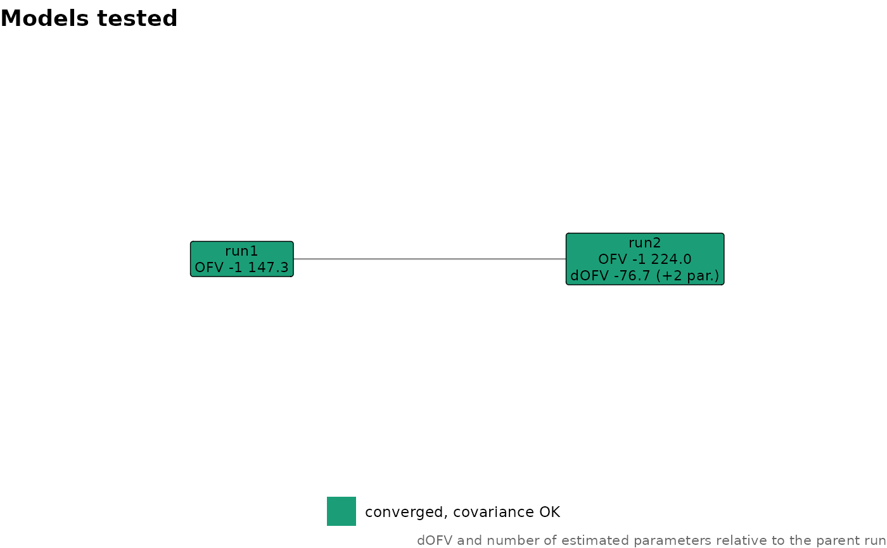

Draws the tree of the runs of a project: each run is linked to the run it was derived from (its parent), and shows its OFV, the change of OFV from its parent (dOFV) and the change in the number of estimated parameters, coloured by convergence state.
Arguments
- x
Result of
nm_extract_runs(), or the path of an analysis directory, which is then read withnm_extract_runs(x).- parents
Optional links that complete or replace those read in the control streams: a named character vector (
c(run2 = "run1")) or a data frame with columnsrunandparent.NAremoves a link.- label_width
Maximum width of the description (text of
$PROBLEM) in the table; longer texts are cut.
Value
An object of class nm_model_diagram: a list with tree, a
data frame with one row per run (run, parent, parent_source:
"control stream", "argument" or "none", ofv, dofv_parent, n_par,
dpar_parent, status, description, and the layout coordinates x
and y; rows in depth-first order, each run right after its parent),
and plot, the ggplot2 tree. plot() returns it (shown when not
assigned); it can be saved with nm_export_plot().
Details
The parent of a run is read in its control stream, in a comment written
with the PsN and Pirana convention, e.g. ;; 1. Based on: run3 or
;; Based on: 3 (the number alone stands for run3). The parents
argument completes or corrects these links. A run whose parent is not
found is drawn as a root.
Examples
ex <- system.file("extdata", "example", package = "nmpilot")
d <- nm_model_diagram(ex, parents = c(run2 = "run1"))
d
#> Diagram of the models tested: 2 run(s), 1 root(s)
#>
#> run parent ofv dofv_parent dpar_parent status
#> run1 <NA> -1147.341 NA NA converged, covariance OK
#> run2 run1 -1224.035 -76.694 2 converged, covariance OK
#> description
#> nmpilot example - BASE model (1-cpt o...
#> nmpilot example - FINAL model (weight...
plot(d)
